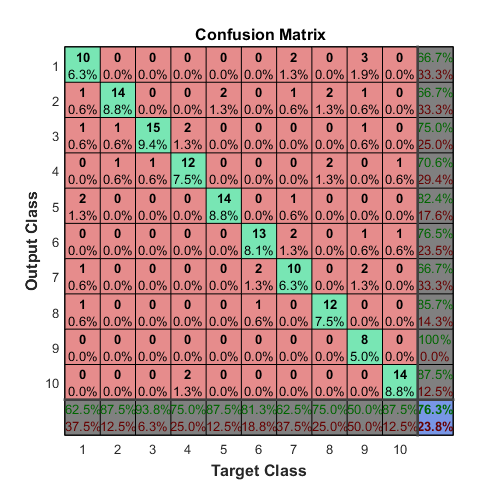
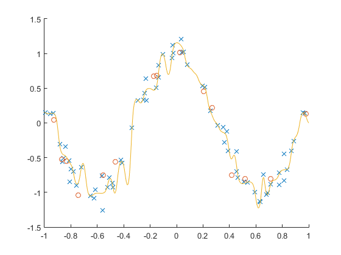
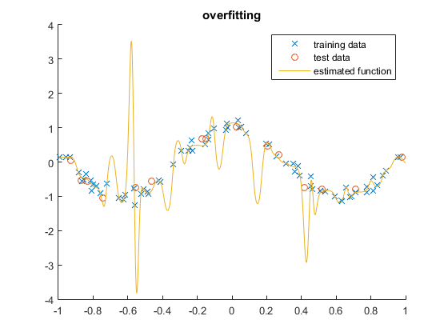
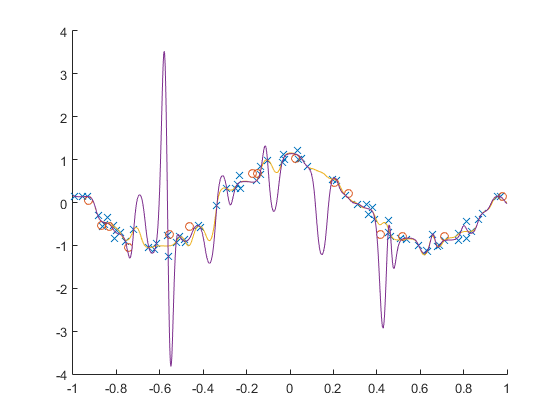

3lab aaut José Miragaia e João Ramiro
Contents
thursday 17H - 18:30H
clear
close all
load digits
net = patternnet([15]);
net.performFcn='mse';
net.layers{1}.transferFcn='tansig';
net.layers{2}.transferFcn='tansig';
net.divideFcn='divideind';
net.divideParam.trainInd=1:400;
net.divideParam.testInd=401:560;
net.trainFcn = 'traingdm';
net.trainParam.lr= .9;
net.trainParam.mc= 0.4;
net.trainParam.show=10000;
net.trainParam.epochs=10000;
net.trainParam.goal=0.05;
[net,tr] = train(net,X,T);
1.4
net.trainFcn = 'traingdx'
net.trainParam.lr= 0.9;
net.trainParam.mc= .7;
net.trainParam.show=10000;
net.trainParam.epochs=10000;
net.trainParam.goal=0.05;
[net,tr] = train(net,X,T);
train(net,X,T);
net =
Neural Network
name: 'Pattern Recognition Neural Network'
userdata: (your custom info)
dimensions:
numInputs: 1
numLayers: 2
numOutputs: 1
numInputDelays: 0
numLayerDelays: 0
numFeedbackDelays: 0
numWeightElements: 550
sampleTime: 1
connections:
biasConnect: [1; 1]
inputConnect: [1; 0]
layerConnect: [0 0; 1 0]
outputConnect: [0 1]
subobjects:
input: Equivalent to inputs{1}
output: Equivalent to outputs{2}
inputs: {1x1 cell array of 1 input}
layers: {2x1 cell array of 2 layers}
outputs: {1x2 cell array of 1 output}
biases: {2x1 cell array of 2 biases}
inputWeights: {2x1 cell array of 1 weight}
layerWeights: {2x2 cell array of 1 weight}
functions:
adaptFcn: 'adaptwb'
adaptParam: (none)
derivFcn: 'defaultderiv'
divideFcn: 'divideind'
divideParam: .trainInd, .valInd, .testInd
divideMode: 'sample'
initFcn: 'initlay'
performFcn: 'mse'
performParam: .regularization, .normalization
plotFcns: {'plotperform', plottrainstate, ploterrhist,
plotconfusion, plotroc}
plotParams: {1x5 cell array of 5 params}
trainFcn: 'traingdx'
trainParam: .showWindow, .showCommandLine, .show, .epochs,
.time, .goal, .min_grad, .max_fail, .lr, .lr_inc,
.lr_dec, .max_perf_inc, .mc
weight and bias values:
IW: {2x1 cell} containing 1 input weight matrix
LW: {2x2 cell} containing 1 layer weight matrix
b: {2x1 cell} containing 2 bias vectors
methods:
adapt: Learn while in continuous use
configure: Configure inputs & outputs
gensim: Generate Simulink model
init: Initialize weights & biases
perform: Calculate performance
sim: Evaluate network outputs given inputs
train: Train network with examples
view: View diagram
unconfigure: Unconfigure inputs & outputs
x_test=X(:,tr.testInd);
t_test=T(:,tr.testInd);
y_test = net(x_test);
plotconfusion(t_test,y_test);

2
2.3
load regression_data
figure (1)
hold on
net = fitnet(40);
net.layers{2}.transferFcn='purelin';
net.trainParam.epochs=10000;
net.trainParam.goal=0.005;
net.performFcn='mse';
net.divideFcn='divideind';
net.divideParam.trainInd=1:70;
net.divideParam.valInd=71:85;
net.divideParam.testInd=86:100;
[net tr] = train (net,X,T);
figure
hold on
scatter (X(1:70),T(1:70),'X')
scatter (X(86:100),T(86:100))
c = -1:0.001:1;
y = net(c);
plot(c,y)
figure
hold on
scatter (X(1:70),T(1:70),'X')
scatter (X(86:100),T(86:100))
c = -1:0.001:1;
y = net(c);
plot(c,y)

2.4
hold on
load regression_data
net = fitnet(40);
net.layers{2}.transferFcn='purelin';
net.trainParam.epochs=10000;
net.trainParam.goal=0.005;
net.performFcn='mse';
net.divideFcn='divideind';
net.divideParam.trainInd=1:70;
net.divideParam.testInd=71:100;
[net tr] = train (net,X,T);
figure
hold on
scatter (X(1:70),T(1:70),'X')
scatter (X(86:100),T(86:100))
y = net(c);
plot(c,y)
legend('training data','test data','estimated function');
title('overfitting');

ultimo gráfico com todos os valores juntos
figure (3)
hold on
plot(c,y)
